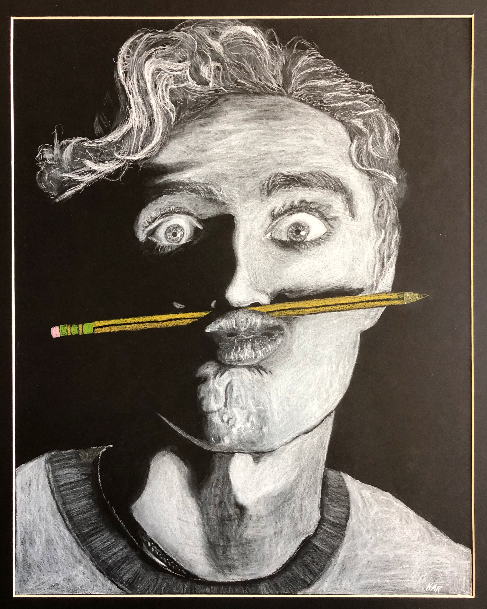

Drawing
I have made art since I was young. These days I mostly sketch animals and landscapes in charcoal, and sometimes reach for oil pastels. Drawing trains the same skill as experimental science: learning to really look at what is in front of you.